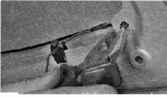
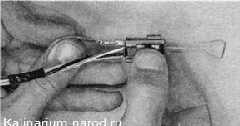
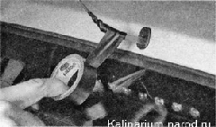
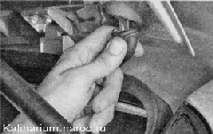
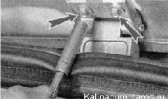
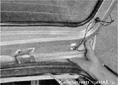

Дверь багажного отделения - снятие и установкаРабота трудоемкая, поэтому выполнять ее следует только в крайнем случае. Питание к электрооборудованию двери подводится по двум жгутам проводов, проложенным по задним стойкам. Чтобы снять дверь с автомобиля, необходимо извлечь оба жгута проводов из ее внутренних полостей. Для этого придется вынуть наконечники всех проводов из соединительных колодок. Можно разрезать провода, а при сборке соединить их, надев на их оголенные концы штекерные разъемы. Дверь можно снять в сборе, а жгуты проводов двери вынуть из салона через отверстия в кузове. Для этого необходимо, сняв накладки с задних стоек кузова, разъединить и разобрать колодки жгутов проводов двери. Работа показана с частичной разборкой двери. Для выполнения работы потребуется помощник. Снятие 1. Снимаем обивку двери. Совет Запомните, как проложены жгуты проводов в двери, маркером или шилом пометьте цвета проводов на всех соединительных колодках. Это упростит сборку. 2. Снимаем стеклоочиститель заднего стекла 3. Отсоединяем колодку проводов от замка двери. 4. Отсоединяем провода от фонарей освещения номерного знака. 5. Отсоединяем наконечники двух проводов от нагревательного элемента заднего стекла. 6. Снимаем дополнительный фонарь сигнала торможения. 7. Отсоединяем держатели жгутов проводов от панели двери. 
8. Разогнув металлическую скрепку, поджимаем два фиксирующих выступа вывода и вытягиваем наконечник провода из колодки, подсоединяемой к стеклоочистителю. 
9. Аналогично отсоединяем от колодки все провода и разбираем другие колодки. 10. Размотав или разрезав изоляционную ленту, расплетаем жгут проводов двери на две ветви. 11. Снимаем форсунку омывателя заднего стекла. Совет Если дверь будет вновь установлена на автомобиль, то перед извлечением проводов из двери привяжите к ним прочные шнуры. При сборке шнуры позволят протянуть провода внутри двери. Аналогично можно поступить с трубкой стеклоомывателя, закрепив к ее концу шнур или проволоку при помощи изоляционной ленты либо скотча.  После извлечения проводов и трубки не забудьте отвязать шнуры, которые должны остаться в дверях. 12. Извлекаем защитный чехол из отверстия двери и вытягиваем наружу правую ветвь жгута проводов вместе с трубкой стеклоомывателя.  13. Аналогично извлекаем из двери левую ветвь жгута проводов. 14. Подставив деревянную рейку, отсоединяем от двери газовые упоры. 15. Удерживая дверь, торцовым ключом на 8 мм отворачиваем два болта крепления двери к петле.  16. Убираем подставку и снимаем дверь с автомобиля. Дальнейшие операции выполняем с помощником, который должен выполнить аналогичные действия на другой стороне двери. Без крайней необходимости не следует отсоединять петли от кузова. Гайки крепления петель закрыты обивкой потолка, которая приклеена к кузову Установка Устанавливаем дверь в обратной последовательности. При установке новой двери провода протягиваем с помощью медной или тонкой (диаметром 0,8—1,0 мм) стальной проволоки. Провода соединяем в соответствии со сделанными метками, либо согласно схемы электрооборудования автомобиля. |